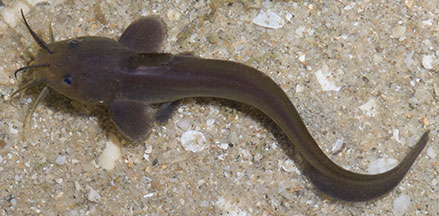
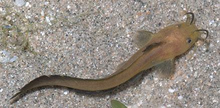
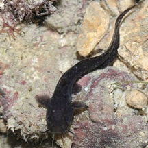

|
|
| fishes text index | photo index |
| Phylum Chordata > Subphylum Vertebrate > fishes > Family Plotosidae |
| Black
eeltail catfish Plotosus canius Family Plotosidae updated Oct 2019
Where seen? These wriggly place eel-like fishes are sometimes seen on some of our shore. Usually seen alone, hiding in pools under stones or other debris on the shore, near seagrasses. Elsewhere, adults found mostly in estuaries and lagoons, and sometimes up rivers in nearly fresh waters. Features: Adults can reach 90cm-1.5m long, those seen at low tide on our shores usually much smaller, about 4-5cm long. Body long, cylindrical and flattening into an eel-like tail. i.e., the dorsal and anal fins are continuous with the tail fin. Snout blunt with four pairs of 'whiskers' (called barbels) all around the mouth. One pair on the snout in front of the eyes, one pair on each side of the mouth and two pairs below the mouth. It lack scales and has a smooth slimy skin. It makes up for this 'nakedness' with venomous spines on the dorsal fin and on each of the pectoral fins. These tough spines can be locked upright, thus making an eeltail catfish unpleasant for bigger fish to swallow. Plain dusky-brown to black with a black dorsal fin tip and a pale belly. Tiny ones resemble black tadpoles. Sometimes confused with Striped eeltail catfishes. The adults of these two eeltail catfishes may appear similar as the stripes on the Striped eeltail catfish fades with age. In Black eeltail catfish adults, the long barbels at the top of the snout can extend past the eyes. These barbels don't extend past the eyes in adult Striped eeltail catfishes. So far, those tiny juveniles seen schooling in dense balls on our shores turn out to be Striped eeltail catfishes. Sometimes mistaken for sea snakes or eels (Family Muraenidae). Here's more on how to tell apart sea snakes, eels and eel-like animals. |
 'Whiskers' (barbels) at the top of the snout can extend past the eyes. |
 Changi, Aug 05 |
 Body may not be black, but tip of dorsal fin always black. Changi, Apr 08 |
||
|
| What does it eat? It eats crustaceans,
molluscs and fishes. It is adapted for hunting
on the sea bottom in murky waters.The 'whiskers' (barbels) around the mouth
do not sting, they help find prey where visibility is poor. The barbels have taste buds
to help sense food. The fish
also has a keen sense of hearing. Also a strong sense of smell, using their 'noses' (nostril-like openings
on the snout). Human uses: The large adults are harvested commercially for eating. |
| Black eeltail catfishes on Singapore shores |
On wildsingapore
flickr
|
| Other sightings on Singapore shores |
 Sisters Island, Dec 10 Photo shared by James Koh on his blog. |
| |
Links
|